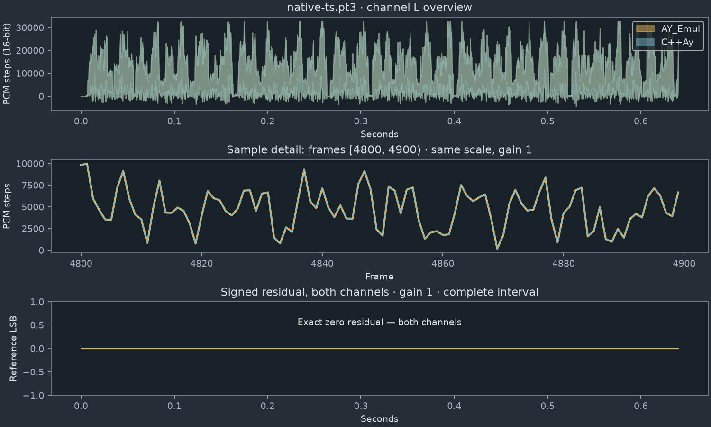

Offline listening aid; browser/OS playback may convert audio. Numerical reports compare original decoded PCM. Reference and candidate cover the same complete interval at unchanged gain. Residual is IEEE float32, gain 1, including values beyond unity without clipping.
Provenance manifest · Results table
BIT_EXACT_PCM · complete PCM interval; gain 1.

Reference WAV · C++Ay WAV · Unscaled float residual · Measurements